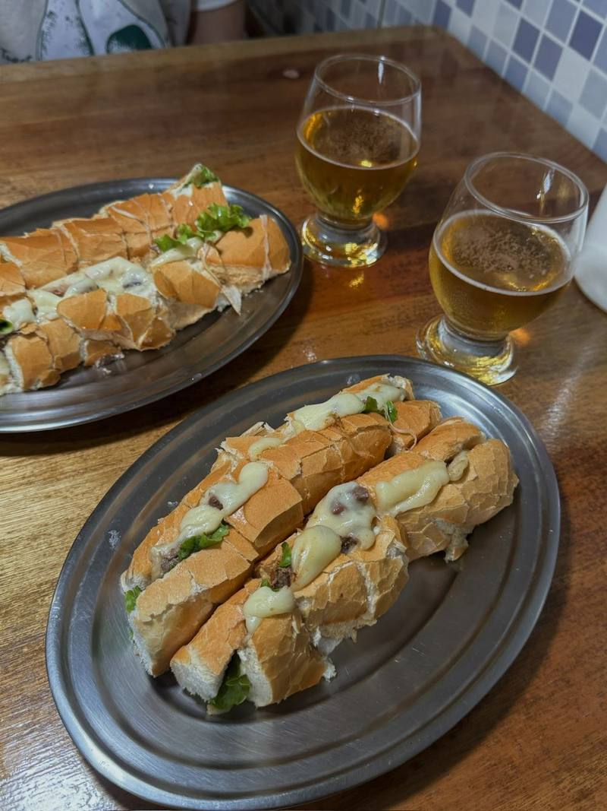
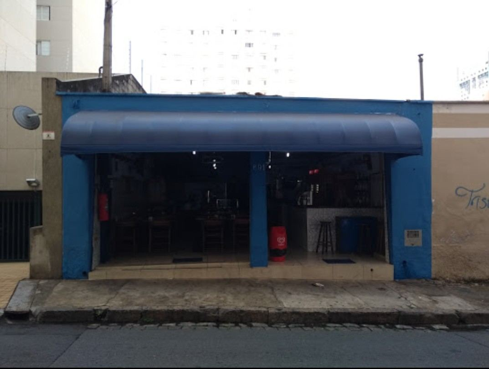
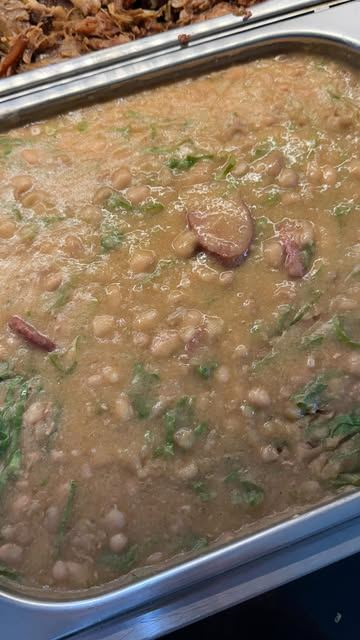
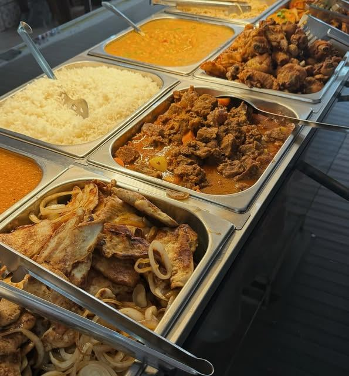
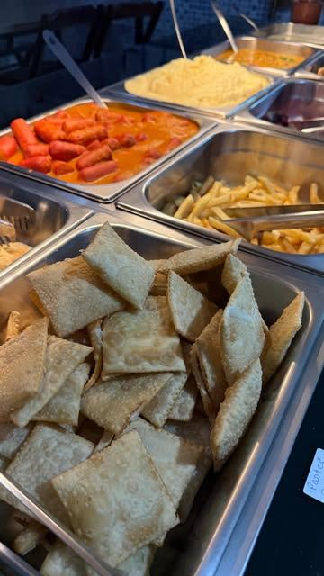

Boca de anjo
No pão baguete, com filé mignon, contra-filé, frango ou pernil.
- Misto quenteR$ 17,90
- BauruR$ 19,90
- Céu Azul, a completano cardápio
Almoço caseiro, caldos que aquecem a semana inteira, boca de anjo, pastel e cerveja gelada. Um bar tranquilo, de família, pertinho de você na Padre Vieira.

Mais de 20 opções, com versão vegana e vegetariana. Escolha o tamanho e veja o preço.

Veganos e vegetarianos
Preços do cardápio publicado pelo bar.

No pão baguete, com filé mignon, contra-filé, frango ou pernil.

Salada primeiro, depois o prato quente com feijão e farofa separada. Tempero de família.

Hambúrguer angus de 100 g no pão, e pastel que os clientes chamam de sensacional.
Comida com tempero de conforto, de família. Saborosa e bem servida. Caipirinha no capricho, no copo certo.Rodrigo · Google
Descoberta maravilhosa, almoço e jantar. Caldos maravilhosos, pastel sensacional. Ambiente familiar e cerveja gelada.Renata · Google
Comecei indo buscar caldo no inverno. Todos os caldos e sopas são maravilhosos. Indico sem medo de errar.Silvana · Google